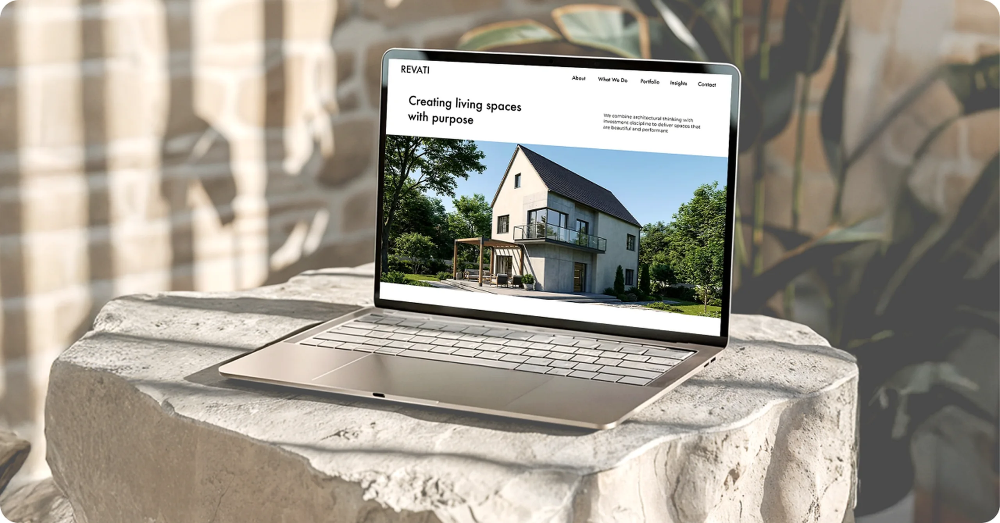
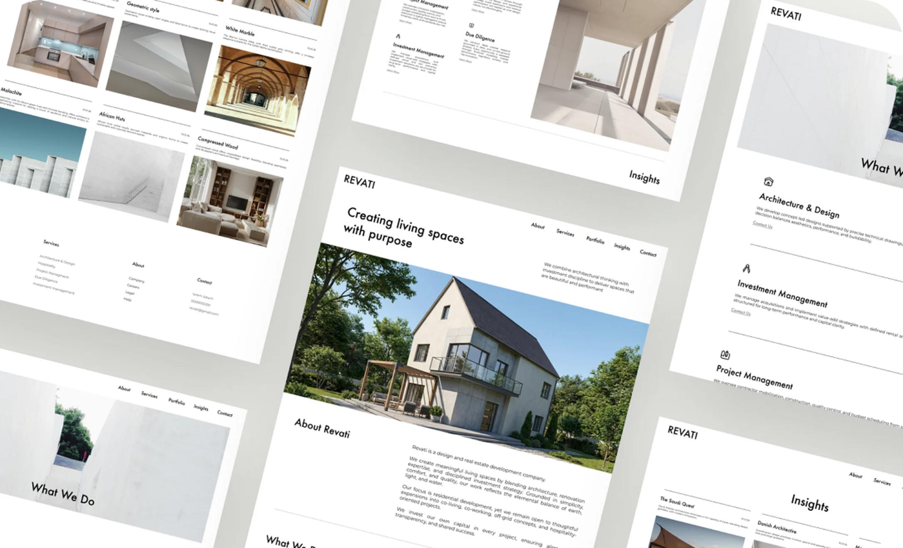
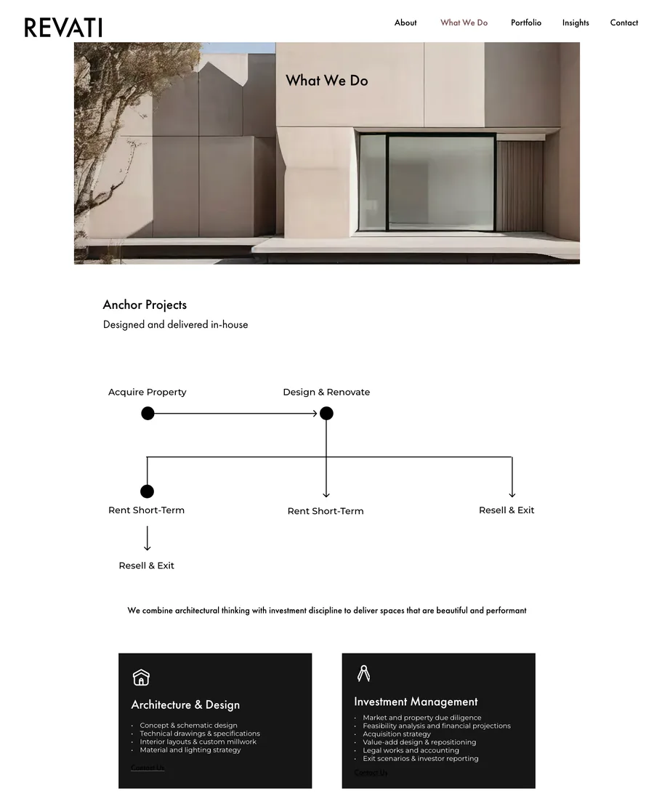
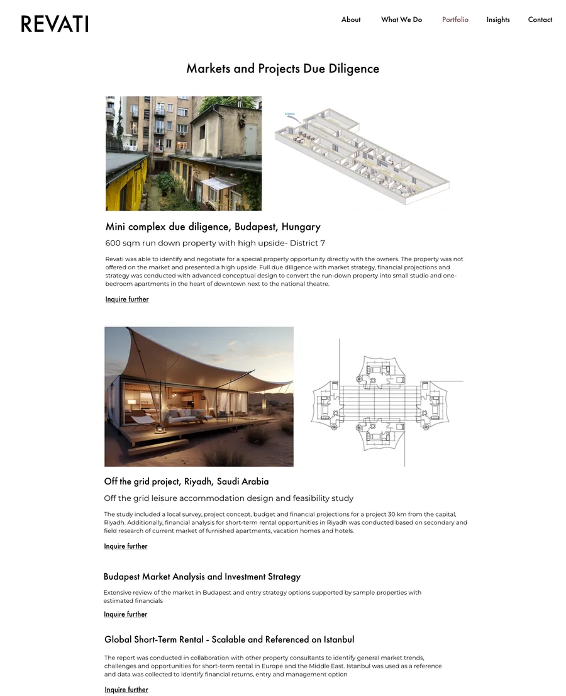
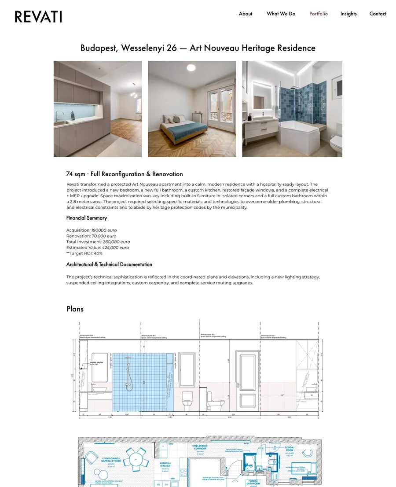

Motive of the design
Giving a real estate developer a home
that feels like its spaces.
The motivation behind this project was to give Revati, a design and real estate development company, a digital presence carrying the same discipline as the spaces it builds. I designed a quiet, photographic interface that speaks to residents and investors in one breath, drawn from the elemental balance of earth, light, and water.

My design aims to reflect the firm’s core values, simplicity, comfort, and quality, through restrained type and full-bleed photography that lets the architecture do the talking. I wanted the two things that set Revati apart to surface early: it invests its own capital in every project, and it leads development end to end. So I let the structure of the page follow the structure of the practice, making a multi-service business legible in a single scroll.
Goal of the design
The goal of this design was to make a
multi-service practice read as clearly to an
investor as it does to a resident.
Revati runs three kinds of engagement, and my first job was to make the difference obvious at a glance: design advisory for aligned external partners, market and project due diligence, and anchor projects delivered in-house from acquisition through redesign, execution, and managed exit. I gave each its own entry point so a visitor can self-select within seconds, then carried five services (due diligence, architecture and design, project management, investment management, and hospitality) through one consistent pattern, so depth never turns into clutter.



Outcome
Visitors don’t skim it, they read it,
nine pages at a time.
In the first month live, 45 people opened 425 pages and stayed an average of seven minutes. A 56% bounce rate against a seven-minute session says the ones who stay, stay a long time, and they go deep rather than wide.
0
unique visitors
0
page views
0
pages per visit
7m 04s
average session
What they read
Device
Markets
The two pages I put first in the structure, what we do and the due-diligence portfolio, are also the two most read, with contact third. Six in ten arrive on a phone, which is why the layout was built narrow-first.
Framer Analytics · revativita.com · 2 September to 2 October 2026